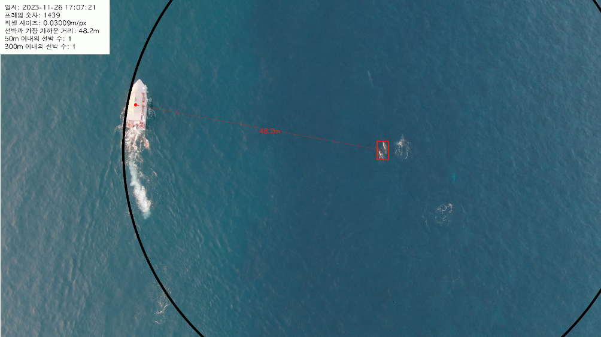
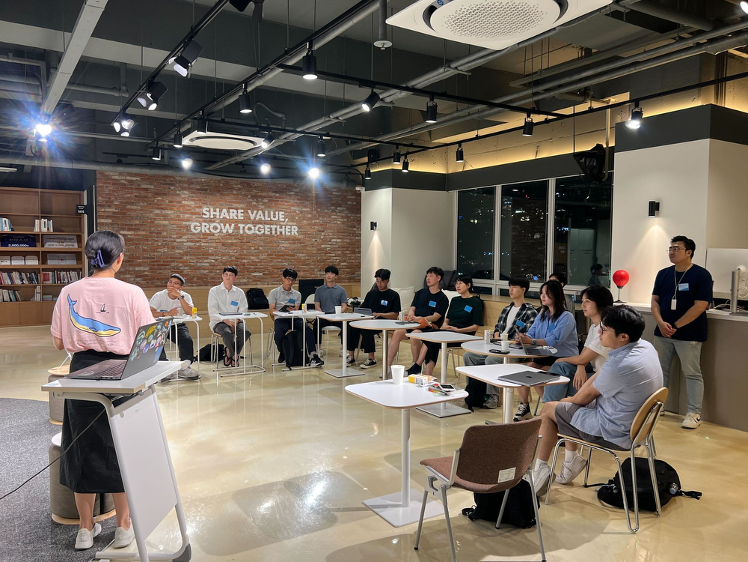
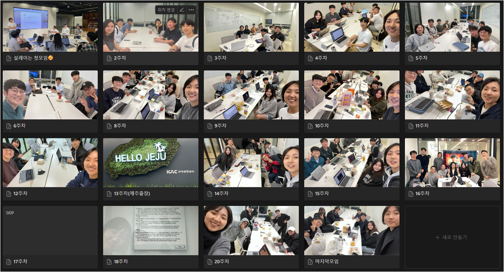
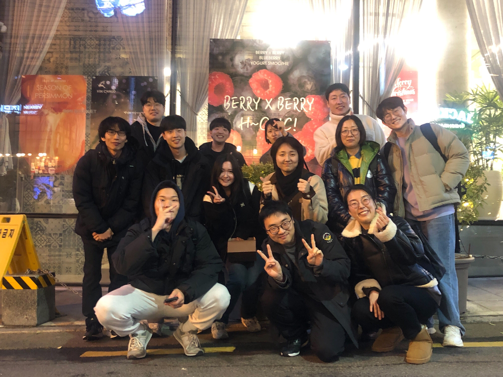
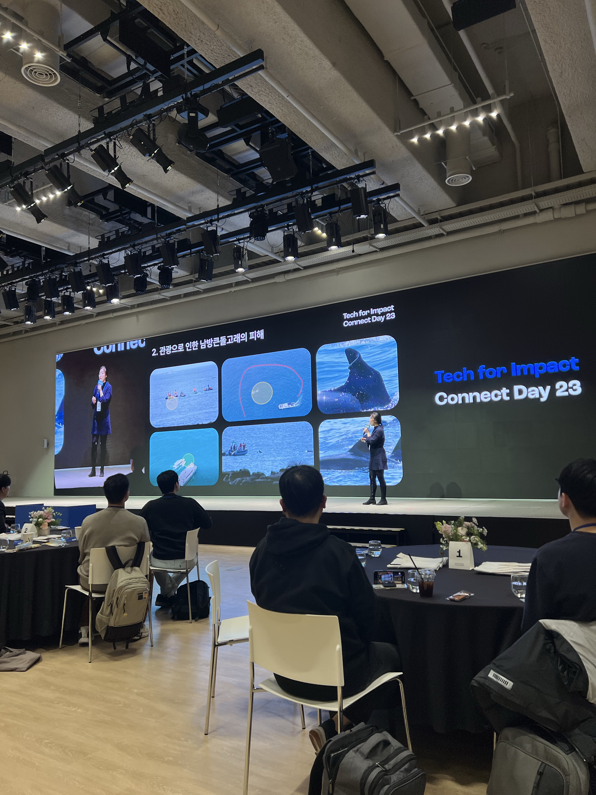
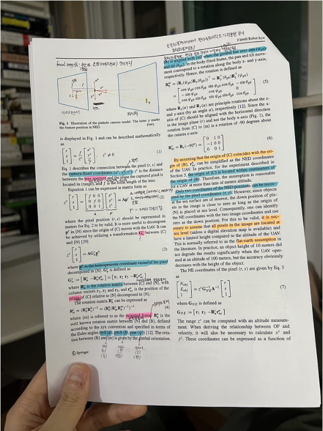

Overview
The Indo-Pacific bottlenose dolphin (Tursiops aduncus) is a protected species endemic to Jeju Island's waters. Korea's Marine Ecosystem Act prohibits tourism vessels from approaching within 50m of dolphin pods — but even when violations were clearly visible in drone footage, there was no quantitative method to prove the actual distance. Eyeballing aerial video is legally insufficient; without a measurable number, enforcement has no ground to stand on.
Working with Kakao Impact, the Jeju Provincial Government, and MARC across 20 weeks, I built a drone-based AI monitoring system using ByteTrack for multi-object tracking. The system detects vessels and dolphins from live drone footage and calculates real-time physical distances in meters — converting visual evidence into precise, legally defensible measurements. The work was published at IEEE CAI 2024 and presented at the Kakao Impact Conference and MODUCON 2023.
Results

Live detection output — vessel 48.2m from dolphin pod (50m limit violated)Stack
Proof of work

Team kickoff session at MODULABS (모두의 연구소) On-site meeting at Jeju Provincial Government — Marine Industry Division (해양산업과)
On-site meeting at Jeju Provincial Government — Marine Industry Division (해양산업과)

20 weeks of meetings at MODULABS — including Jeju Island fieldwork (Week 13)
Team outing with MARC (해양동물생태보전연구소) members Team at MODULABS Drone Video Analysis Lab
Team at MODULABS Drone Video Analysis Lab

Kakao Impact — Tech for Impact Connect Day (2023): MARC Director presenting the dolphin monitoring system
Reference paper: pixel-to-geographic coordinate transformation for drone camerasTakeaways
Reference
MODUCON 2023 slides were presented by lab leader Han Seo-woo (한서우). · The SES Cares drone innovation proposal reached the finals; the team withdrew after SES required technology transfer as a condition of the award.